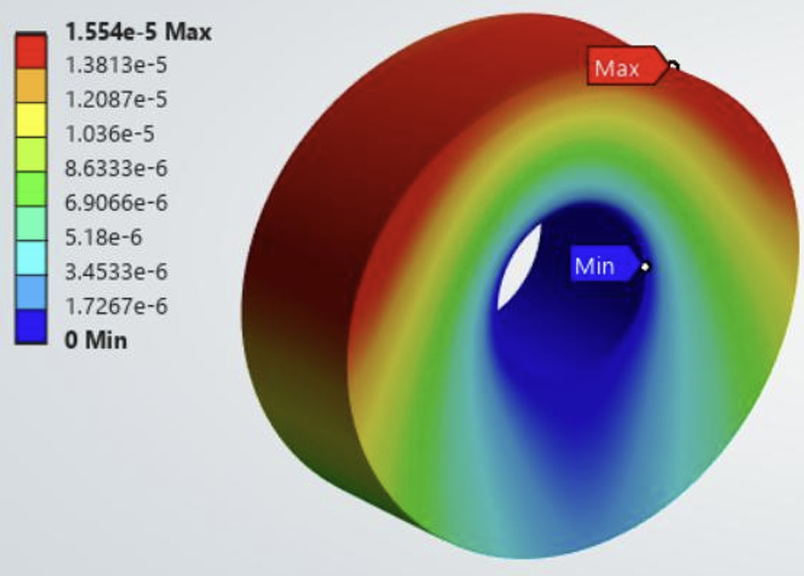
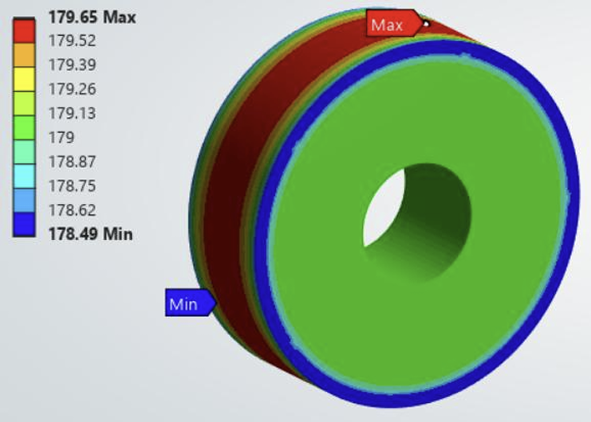
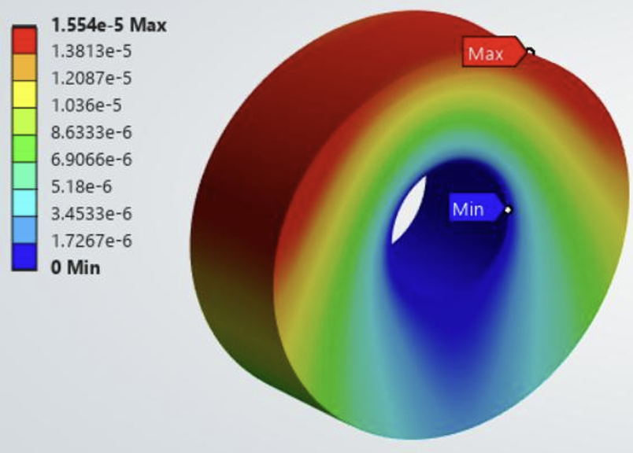
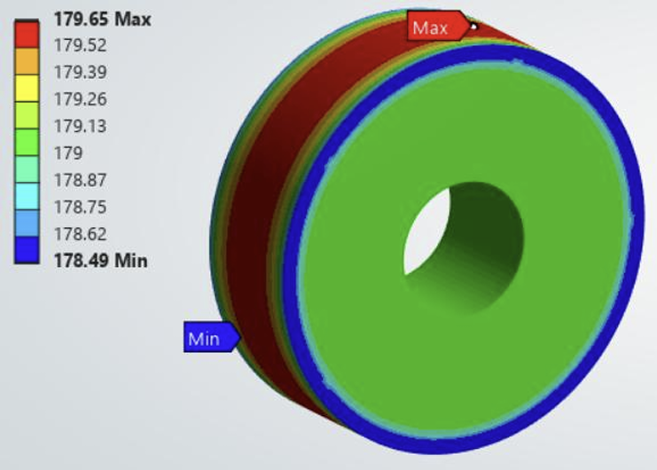

About me
For over a decade I’ve been fascinated with robotics. This led me to Mechatronics at Queen’s University, where I found lifelong friends and cultivated my skills in CAD, programming languages and embedded system development. I guide my work by one principle: volume. Do it enough times, refine it enough times, and success becomes inevitable.

Projects
High-Torque 20:1 Helical Gear Reduction Drive
Designed and fabricated a custom two-stage reduction gearbox to convert high-speed DC motor input (10,000+ RPM) into high-torque output for robotic actuation. The project served as a targeted exercise to improve CAD modeling, Design for Manufacturing (DFM), and Geometric Dimensioning and Tolerancing (GD&T) skills.

Emergency Hyperloop Landing Wheel – Smith Engineering Hyperloop
What? Led a team of 4 to design a vacuum-compliant, composite emergency landing wheel for a 20-tonne MagLev vehicle operating at high speed in a low-pressure tube. The design needed to survive high impact loads and provide substantial braking capability.
How? Designed a two-layer wheel using Inconel 600 and Aluminum 7075-T6 and performed structural and thermal analysis in SimScale to validate strength and thermal performance. Wrote Python scripts to determine optimal wheel diameter and mounting angle.
Results
Presented at Hyperloop Global 2025 and won 1st place.
 



Autonomous Delivery Robot – Mechatronics and Robotics Design II
What? Collaborated with a team of 4 to design an autonomous delivery robot with a 2‑point hitch trailer for use in hospitals. The system navigates pre‑mapped indoor paths, avoids obstacles, and maintains localization despite wheel slip.
How? Implemented a weighted undirected graph in C++ with Dijkstra’s algorithm for shortest‑path navigation, prototyped encoder‑based localization, designed a caster‑wheeled trailer in Onshape, and built a wireless prototype interface using Arduino WiFiNINA and a web UI.
Results
- Achieved functional navigation and localization subsystems and a working wireless prototype interface.
Functional Model Elevator – Data Structures and Algorithms
What? Designed, built, and programmed a functional model elevator that leverages data structures to efficiently manage user requests for pick-ups and drop-offs.
How? Implemented two doubly linked lists to track active elevator requests and a separate node for priority users, optimizing efficiency in request handling. Designed the model elevator using Onshape. Developed the hardware system including a 1-inch LCD display, a motor driver to control elevator movement, and a magnetic encoder to accurately track the elevator’s position.
Results
- All implemented data structures and algorithms functioned as expected for Call, Delete Call, and Priority Requests.
- Mechanical components performed reliably: functional floor buttons, priority button, and smooth door operation.
Line Following Robot – Mechatronics and Robotics Design I
What? Programmed a MiniBot to follow a black line and pick up blocks using an IR sensor. The goal was to have the MiniBot follow the line in a circle and pick up blocks three times with a minimum of 5 per time.
How? Calibrated sensor voltage readings for line detection and coded Arduino control to adjust wheel speeds to stay on the line. Used an optimized block layout to maximize pickups per run.
Results
One of two groups to pick up all 50 blocks, creating a tie for first.
Skills
- Design: SolidWorks, Onshape, SimScale, LTSpice
- Programming: Python, C, C++, HTML, MATLAB, Git, VHDL, Assembly
- Hardware: Soldering, Circuit Analysis
- Productivity: Word, PowerPoint, Excel, Figma, LaTeX
- Languages: French (Fluent), English (Fluent)
Achievements & Awards
- Dean's Scholar Distinction – Academic recognition at Queen's University.
- Canada Summer Games - Qualified and competed in Sailing for Manitoba
- Award of Merit - Given by Sport Manitoba
Contact
Email: Benjamin.Cox@queensu.ca
Phone: (204) 892-2100
LinkedIn: linkedin.com/in/bcox-eng